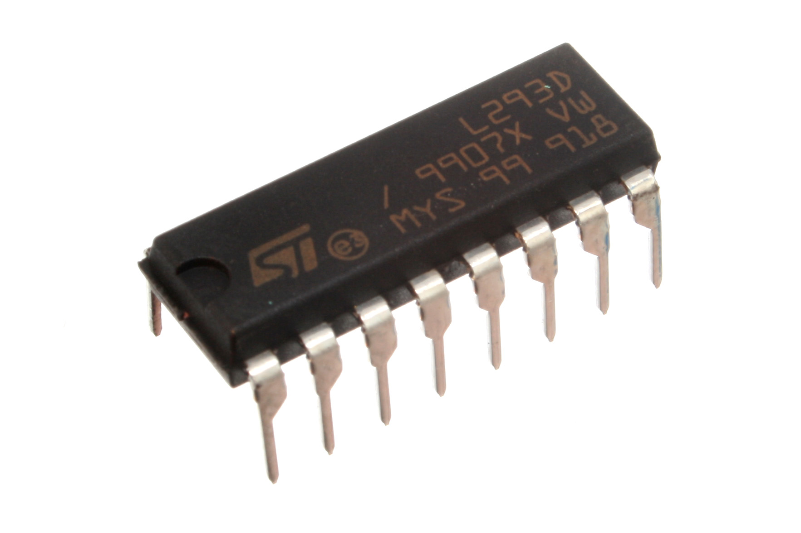

Componentes
- Arduino Leonardo
- Sensor MPU 6050
- Motor DC 9V-9500rpm
- Llantas
- Puente H L293D 
- Maqueta

Procedimiento
El mini segway esta compuesto por un eje central el cual se le transmite el movimiento por medio del motor DC, por falta de torque se realiza una relación de piñoneria para aumentar el torque con un piñon de 20 dientes en el motor y uno de 50 en el eje principal donde estan las llantas; esta relación disminuye la velocidad pero aumenta el torque para mover el montaje.
Eje principal
Motor con piñon
Posteriormente se realizaron las conexiones necesarias entre el Arduino, el sensor y el puente H para poder controlar el mini segway.
Este es el circuito que se implemento con las conexiones al sensor y al puente H para controlar el minisegway